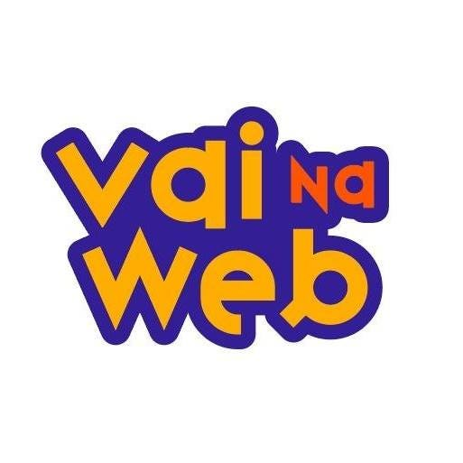

Sobre mim
Possuo experiência como Front End utilizando Javascript, React, NextJs, TypeScript, Tailwind Css, Bootstrap, e Sass, metodologia Scrum e aplicando o fluxo de trabalho Git Flow, Formado em Análise e Desenvolvimento de Sistemas🎓, praticando e buscando novas oportunidades.
Skills
-
 HTML5
HTML5
-
 CSS3
CSS3
-
 Javascript
Javascript
-
 React
React
-
 Typescript
Typescript
-
 Sass
Sass
-
 BootStrap
BootStrap
-
 Tailwindcss
Tailwindcss
-
 Firebase
Firebase
-
 Git
Git
-
 NextJs
NextJs
Formação Acadêmica
-

Programador full stack javascript
Onebitcode - Em andamento
-

Análise e desenvolvimento de sistemas
Descomplica - Concluído
-

UX/UI Design and Front-End Development
Origamid - Em andamento
-

Desenvolvedor
Full StackVai Na Web - Em andamento
Experiência
Agência Pixel Creative
Desenvolvedor front-end
(Autônomo) | Jul/2024 - Set/2024
Desenvolvedor Front end em soluções web, utilizando as tecnologias, JavaScript, HTML, CSS, Sass e Next.js, versionamento de códigos utilizando Git. Contribui para o desenvolvimento de um software que atende uma empresa com presença em quatro estados do Brasil, demonstrando capacidade de trabalhar em projetos de grande impacto e alcance.
- NextJs
- Typescript
- Sass
- Html
- Css
- Javascript
Comunidade FrontEnd Fusion
Desenvolvedor Front End - (Voluntário)
01/2025 - (Presente)
Atuo no desenvolvimento de soluções tecnológicas com impacto social, utilizando React.js, Tailwind CSS e TypeScript. Trabalho seguindo a metodologia Scrum e aplicando o fluxo de trabalho Git Flow para garantir organização e eficiência no versionamento de código. Colaboro com a equipe para construir interfaces modernas, acessíveis e responsivas, sempre buscando a melhoria contínua e a entrega de valor para a comunidade.
- React.js
- Typescript
- Tailwind CSS
- Git Flow
- Mentodologia Scrum
Projetos
Ticket Controle
- Next.js
- Prisma
- MongoDB
- NextAuth
- React Hook
- Tailwind CSS
Ticket Controle é um sistema web desenvolvido com Next.js, Prisma ORM, MongoDB e TailwindCSS para gerenciar clientes e chamados de atendimento de forma eficiente e fácil.
Dev motors
- NextJs
- Typescript
- Sass
- CosmicJs
- REST API
Desenvolvido utilizando Next.js e SCSS , consome conteúdo de um CMS usando a Cosmic API. O site oferece uma experiência de usuário suave com design responsivo e uma UI moderna. Ele exibe várias seções, como serviços, informações de contato e muito mais, todas preenchidas dinamicamente com dados da Cosmic. Ele inclui recursos como uma página inicial, página de serviços e detalhes de contato, com tratamento de erros adicional e estados de carregamento para garantir uma navegação perfeita.
WebCarros
- HTML5
- TailwindCss
- React
- Typescript
- Firebase
WebCarros é uma plataforma de e-commerce para compra e venda de carros, desenvolvida com React, TypeScript e Vite, Listagem de Carros: Veja todos os carros disponíveis para compra, Adicione e remova carros do seu Dashboard, Detalhes do Carro: Informações detalhadas sobre cada carro, Finalização de Compra: Conclua a compra dos carros atravéz do whatsapp do anunciante Autenticação: Cadastro e login de usuários usando Firebase.
Landing page Pet
- NextJs
- Typescript
- Tailwind CSS
- CosmicJs
- Embla Carousel
- AOS
Este é um projeto desenvolvido para um pet shop, com o objetivo de oferecer serviços de cuidados para animais de estimação, como banho e tosa, consultas veterinárias, táxi pet, entre outros. O site tem um design responsivo e utiliza diversas tecnologias como Next.js, Tailwind CSS, React, e Embla Carousel - Biblioteca para criar carrosséis interativos de serviços e marcas, AOS - Biblioteca para animações de rolagem, proporcionando efeitos visuais interativos.
DalyGames
- NextJs
- Typescript
- Tailwind Css
Daly Games é uma aplicação web que exibe uma coleção de jogos, oferecendo aos usuários uma sugestão diária de jogo e informações detalhadas sobre cada jogo. Este projeto foi construído utilizando Next.js e estilizado com Tailwind CSS. A aplicação consome dados de APIs personalizadas para fornecer conteúdo dinâmico e experiências personalizadas.

PrimeFit
- HTML5
- CSS
- Bootstrap
- Javascript
Integrando uma API mokada para o blog. Destaco a usabilidade aprimorada com manipulação eficiente do DOM e a modernização visual com FontAwesome. O código organizado e a otimização de imagens para WebP contribuem para um desempenho eficiente. Este projeto demonstra minha habilidade em criar websites interativos e visualmente atraentes. HTML, CSS, Bootstrap e JavaScript.

Cardápio online
- HTML5
- CSS
- Bootstrap
- Javascript
O Cardápio online é uma aplicação web interativa que simula um cardápio online de uma hamburgueria, permitindo aos clientes visualizar os itens disponíveis, integrando a API via CEP para localizar o endereço, fazer pedidos e enviá-los diretamente para a hamburgueria via WhatsApp. Desenvolvido com HTML, CSS, Bootstrap e JavaScript, o projeto oferece uma experiência fluida e envolvente para os usuários.
Contato
Me mande uma mensagem!
Tem uma pergunta ou proposta, ou apenas quer dizer "olá"? Vá em frente.